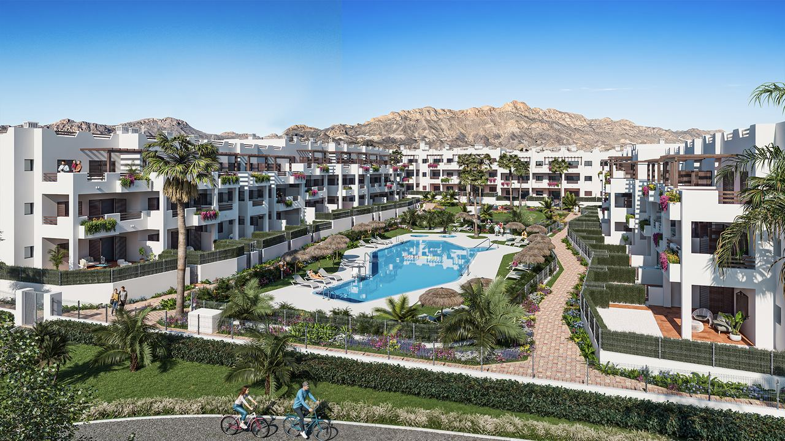
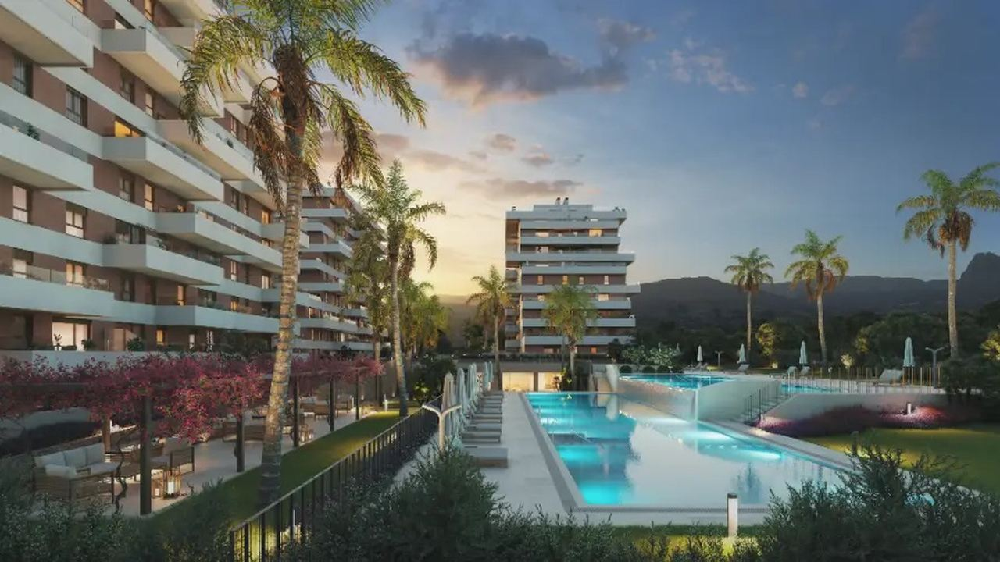
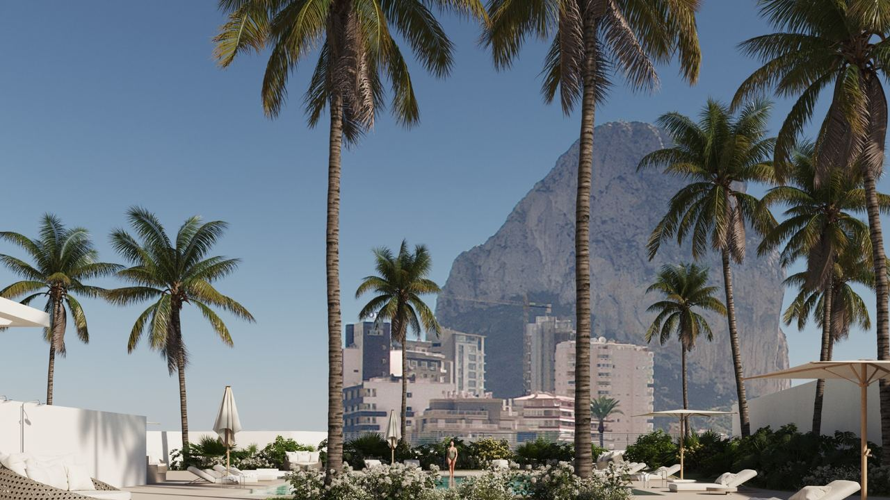
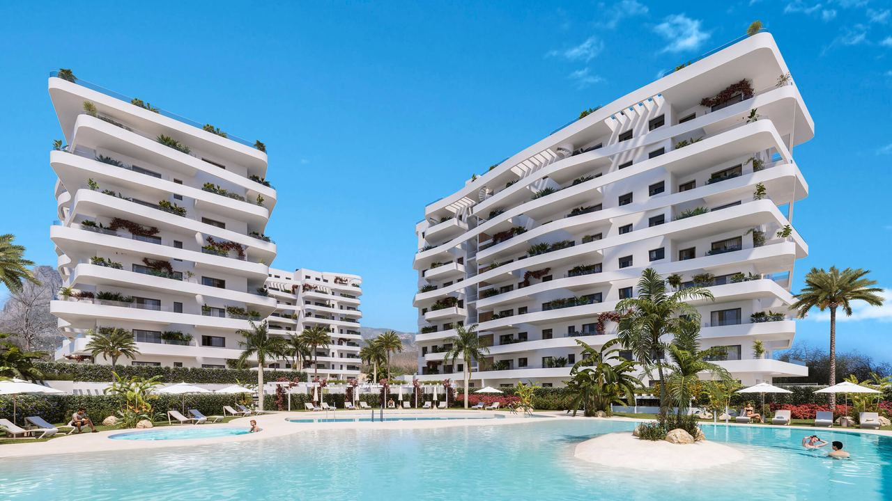

Owning in Spain · Your building
Comunidad de Propietarios – How the Community of Owners Works in Spain
 By Aleksandra Kobus · · updated · 4 min read
By Aleksandra Kobus · · updated · 4 min read

In short: When you buy an apartment or a home on a shared complex in Spain, you automatically join its community of owners (comunidad de propietarios). It looks after the shared parts, such as pools, gardens, lifts, roof and security, and charges a fee, usually monthly or quarterly. Each year the owners meet to approve the budget and elect a president, while a professional administrator runs the day-to-day work. By law at least 10% of the budget goes into a reserve fund. Unpaid fees from the current year and the three before stay with the property, so always get a debt certificate before you buy.
Most apartments and many villas on the Costa Blanca and Costa del Sol are part of a community of owners. For owners who spend much of the year abroad this is a real advantage: someone looks after the pool, the gardens and the building all year.
Here is how a comunidad de propietarios works, what you pay, what you can decide and what to check before buying.
What is a comunidad de propietarios?
A comunidad de propietarios is the legal body of all the owners in a building or complex. It is governed by the Spanish Horizontal Property Act (Ley de Propiedad Horizontal) and by the community's own statutes and house rules.
Each owner owns their home outright and a share of the common parts, set as a percentage in the deed (cuota de participación). This share decides how much of the costs you pay and how much your vote weighs.
The community is responsible for the common parts, for example:
- pools, gardens, play areas, gyms and sports courts,
- entrances, stairs, corridors and lifts,
- roof, façade and structure,
- garages, car parks and gates,
- security, cameras and lighting,
- the community's insurance.
How it is run

- President (presidente): an owner elected for one year, often by rotation. They represent the community, call meetings and sign on its behalf.
- Administrator (administrador de fincas): usually a professional firm that handles accounts, fees, suppliers, insurance and minutes. On many complexes they also act as secretary.
- Annual general meeting (junta general ordinaria): held at least once a year to approve the accounts and budget, set the fees, elect the president and decide on works.
You can vote in person, or send someone with a signed proxy, for example your lawyer, property manager or another owner. Owners who are behind with their fees may attend but cannot vote.
Most decisions need a simple majority. Some need more: changing the statutes generally needs unanimity, and allowing new tourist rentals in the building needs three-fifths of the owners since April 2025. If you disagree with a decision, you can challenge it in court, normally within three months, but only if your fees are paid.
What the fees cover and what they cost
The fee (cuota de comunidad) pays for cleaning, gardening, pool maintenance, lift servicing, electricity and water for common areas, insurance, the administrator and, on larger complexes, security staff or a concierge.
By law, at least 10% of the yearly budget must go into a reserve fund (fondo de reserva) for repairs. For large works the community can also agree a one-off levy (derrama).
Fees vary a lot. A small building without a pool may cost a few hundred euros a year, while a large complex with pools, gyms and 24-hour security can cost several hundred euros a month. More facilities and staff mean higher fees, but also less work for you.
Under the 2025 reform, communities can charge tourist rental flats up to 20% more than other homes.
Your rights and duties
Rights: use all common facilities, attend and vote at meetings, see the accounts and minutes, propose items for the agenda and challenge decisions.
Duties: pay fees on time, keep your home in good repair, allow access for necessary works, respect the house rules (for example on pool hours, noise, pets or changes to terraces and façades) and tell the administrator your address for notices. If you live abroad, give an email address and keep it up to date, because notices sent to your Spanish address count as delivered.
If an owner does not pay, the community can go to court with a fast-track procedure and, in the end, the property can be auctioned.
What to check before you buy

- Debt certificate. The buyer is liable for unpaid fees of the current year and the three previous calendar years. The seller must give a certificate from the administrator showing no debt, usually at the notary.
- The fee and what it includes, and whether a rise or a levy has been agreed.
- The minutes of the last meetings, for planned works, disputes, defects or lawsuits.
- The statutes and house rules, especially on rentals, pets and changes to terraces.
- The reserve fund and the state of the building.
A well-run community with healthy finances protects the value of your home. Our guide to the Nota Simple explains the other checks before buying.
Frequently asked questions
Is membership of the community of owners compulsory?
Yes. If your home is in a building or complex with shared parts, you become a member automatically when you buy, and you must pay the fees.
How much are community fees in Spain?
It depends on the facilities and the size of the complex: from a few hundred euros a year in a small building to several hundred euros a month on a large complex with pools, gym and security.
Do I pay the previous owner's unpaid fees?
The property answers for unpaid fees of the current year and the three previous calendar years. That is why the seller must provide a no-debt certificate before signing.
Can I vote if I live abroad?
Yes. You can give a signed proxy to someone you trust, such as your lawyer, property manager or another owner. Some communities also allow online attendance.
Can the community stop me renting to tourists?
For new tourist rentals, yes: since April 2025 they need the approval of three-fifths of the owners, and statutes can ban them.
Choose the community as well as the home

Before you make an offer, we ask the administrator for the fees, the debt certificate and the latest minutes, so you know what you are joining. Contact us to see homes in well-run communities on the Costa Blanca and Costa del Sol.
Sources: BOE – Ley 49/1960 de Propiedad Horizontal (consolidated)